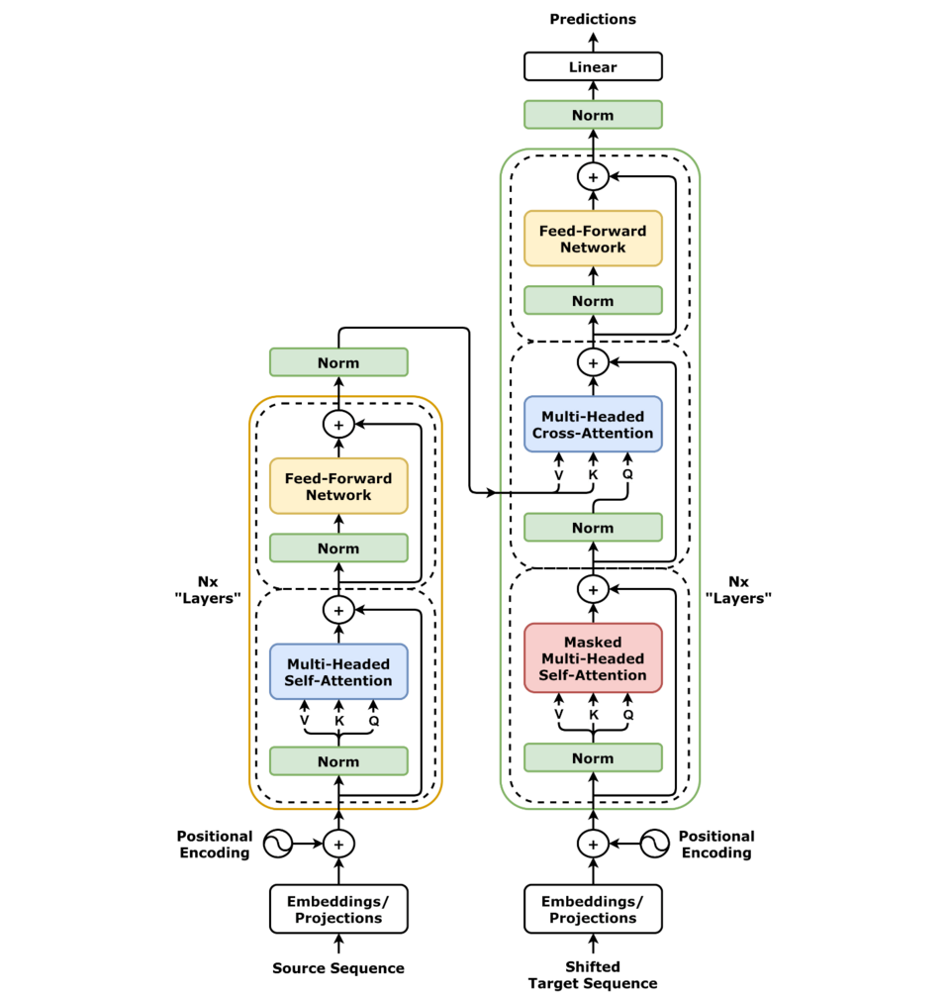

发展脉络
Transformer 从 encoder-decoder 演进为 decoder-only 主流，随后引入 Pre-Norm、RMSNorm、SwiGLU、GQA/MQA 与 MoE 以改善稳定性和推理成本。
前面几节讲了注意力、多头、位置编码——这些都是零件。把零件组装起来得到完整的 Transformer 层，再把层堆叠成不同形态（Encoder-only / Encoder-Decoder / Decoder-only），才是真正可用的模型。三种形态的对决结果是：Decoder-only 一统天下。这一节把整条数据流拉通，算清参数账，并教你怎么只看一份 config.json 就把一个陌生模型读明白。
一条完整的 Transformer 数据流：词嵌入 → 位置编码 → 堆叠 N 层 Block（每层包含多头注意力 + 前馈网络）→ 输出头 → 概率分布。整条链路没有循环，所有 token 并行流过。
把 Transformer 层的两个子模块拆开写出，一次前向就是这四步：
注意每一步的输出维度始终是 $n \times d_{model}$。注意力层改变的是 token 之间的交互，FFN 层改变的是每个 token 内部的表示——两个子模块分工明确：注意力负责"交流"，FFN 负责"思考"。
上面写的顺序是把 Norm 放在子模块前面，这叫 Pre-Norm。原始论文写的顺序是把 Norm 放在子模块后面，叫 Post-Norm：
| Pre-Norm（现代默认） | Post-Norm（原始论文） | |
|---|---|---|
| 计算顺序 | Norm → Attention → +X | Attention + X → Norm |
| 残差路径 | 绕过 Norm 和 Attention 两者 | 只绕过 Attention |
| 训练稳定性 | 无需 warmup 即可收敛 | 需要学习率 warmup，否则初期梯度爆炸 |
| 深层时表现 | 对层数不敏感，可堆上百层 | 深层时残差积累导致规范化失效，极深时不稳定 |
| 下游微调 | 略有轻微退化（可接受） | 略好（但付出的训练成本更高） |
| 代表 | GPT-2 及之后几乎所有模型 | 原始 Transformer、BERT |
Pre-Norm 的胜出是工程实践的选择：省掉 warmup、在更深的网络上更稳定，这两点对 scaling 来说比微调那点微小差异重要得多。今天读到任何"Transformer Block"，默认就是 Pre-Norm。
具体使用的归一化算子也在进化。原始论文用的是 LayerNorm，而 Llama 等现代模型已统一迁移到计算更快的 RMSNorm。FFN 侧同样：从 ReLU → GELU → SwiGLU，每一次替换都带来可测量的质量提升。
残差连接 在 Block 里不止出现一次，而是两次——注意力输出和 FFN 输出之后各加一次。它的作用不仅是"防退化"：从反向传播的角度看，残差提供了一条绕过子模块的梯度直达路径。
对于 Pre-Norm 下的第 $L$ 个 Block，输入到输出的梯度可以被分解为两条路径的和——一条穿过 MHA/FFN 的非线性变换，另一条直接原封不动地传回输入。深层训练中，后面那条"直通"路径的梯度不会衰减，保证了即使 MHA 或 FFN 的梯度近乎消失，信号仍然能传到网络浅层。这就是为什么 Pre-Norm 下 model depth 可以从 6 层一路堆到 100+ 层而不崩——不是因为子模块变得更"好用"了，而是因为残差保证了一部分梯度永远不断地流到底。
把上面四个公式翻译成代码，一个现代 Pre-Norm Block 大致长这样（省略了掩码和 KV Cache 的细节）：
import torch
import torch.nn as nn
class Block(nn.Module):
def __init__(self, d_model, n_heads, d_ff):
super().__init__()
self.norm1 = nn.RMSNorm(d_model) # 也可用 nn.LayerNorm
self.attn = MultiHeadAttention(d_model, n_heads)
self.norm2 = nn.RMSNorm(d_model)
self.ffn = SwiGLU_FFN(d_model, d_ff)
def forward(self, x, mask=None):
# 子层一：先归一化，算注意力，再加回残差
x = x + self.attn(self.norm1(x), mask=mask)
# 子层二：先归一化，算 FFN，再加回残差
x = x + self.ffn(self.norm2(x))
return x # 形状与输入完全一致
class DecoderOnlyLM(nn.Module):
def __init__(self, vocab, d_model, n_heads, d_ff, n_layers):
super().__init__()
self.embed = nn.Embedding(vocab, d_model)
self.blocks = nn.ModuleList(
[Block(d_model, n_heads, d_ff) for _ in range(n_layers)])
self.norm_f = nn.RMSNorm(d_model) # Final Norm，别漏
self.head = nn.Linear(d_model, vocab, bias=False)
def forward(self, ids, mask=None):
x = self.embed(ids) # (B, n, d)
for blk in self.blocks:
x = blk(x, mask) # 维度始终不变
return self.head(self.norm_f(x)) # (B, n, vocab)整个 Decoder-only 语言模型的骨架就这么多。值得注意的是 for blk in self.blocks 这一行——所有层结构完全相同、只是参数不同，这正是"维度守恒"带来的简洁性。真正的复杂度不在架构本身，而在位置编码怎么施加、KV Cache 怎么管理、以及分布式训练怎么切分。
norm_f（Final Norm）经常被漏掉，Pre-Norm 架构没有它输出尺度会漂；② head 通常不带 bias；③ 上面代码没写位置编码——现代模型用 RoPE 时是在每层的注意力内部对 Q/K 施加旋转，而不是在 embedding 之后加一次，这与原版正弦编码的做法不同，初次实现时极易搞错。
Transformer 论文最初提出的是一套 Encoder-Decoder 架构，但后来社区发现——根本不需要两个塔都搭。根据"用不用 Encoder、用不用 Decoder"，演化出三种形态：
| 维度 | Encoder-only | Encoder-Decoder | Decoder-only |
|---|---|---|---|
| 注意力方向 | 双向（每个 token 看所有 token） | Encoder 双向 + Decoder 单向因果 | 单向因果（只看左边） |
| 核心操作 | 自注意力 | 自注意力 + 交叉注意力 | 自注意力 + 因果掩码 |
| 训练目标 | 掩码语言建模 MLM（完形填空） | seq2seq（输入 → 输出） | 自回归 LM（逐 token 预测下一个） |
| 一次前向得到 | 每个位置的上下文表示 | 一条完整的输出序列 | 每个位置预测的下一个 token |
| 典型任务 | 文本分类、NER、句子相似度 | 翻译、摘要、有监督文本生成 | 开放式文本生成、对话、代码补全 |
| 代表模型 | BERT、RoBERTa | T5、原始 Transformer、BART | GPT 系列、Llama、Qwen、DeepSeek |
| 现状 | 垂直理解类任务仍在使用 | 罕见，已被 Decoder-only 覆盖 | 绝对主流，新模型几乎全部选它 |
这个问题的答案不是"Decoder-only 更强"，而是"在给定的算力预算下，Decoder-only 更高效地利用了训练信号"。
对比三种形态的训练密度：
Encoder-only 模型做分类要加分类头，做 NER 要做序列标注头——每个任务都要单独训练或微调，架构不统一。Decoder-only 把一切任务都统一为"给定上文，续写下文"：
同一套架构、同一套训练范式、同一套推理代码，通过 prompt 在不同任务间切换。这种统一性对 scaling 至关重要——不需要为每个新任务重新设计输出层，直接用更多的数据和算力砸同一个模型即可。
另一条暗线：双向注意力在极大规模下的训练稳定性不如因果注意力。双向意味着每个位置受所有位置影响，梯度依赖图是全连接的——噪声从任意位置传遍全图。因果掩码把梯度图剪成了下三角，依赖更稀疏、传播路径更短。经验上，Decoder-only 在堆到 100+ 层、模型到千亿参数时，训练比 Encoder-only 容易不少。这在架构选择时或许不是决定性因素，但在工程实践中是真实存在的加分项。
因果掩码带来一个 Encoder 永远拿不到的红利：已经算过的 token，它的 K 和 V 永远不会再变。因为每个位置只看左边，新增一个 token 不会影响此前任何位置的表示。于是推理时可以把历史的 K/V 缓存下来，生成第 $t+1$ 个 token 时只算一个新位置，把复杂度从"每步 $O(t^2)$"降到"每步 $O(t)$"。
双向注意力做不到这一点——新增 token 会改变所有位置的表示，缓存直接失效。这条性质深刻影响了整个推理栈的设计，详见 KV Cache。换句话说，Decoder-only 的胜出不只是训练效率，也包括推理效率。


把架构拉通一遍可以建立清晰的参数量直觉。以 Llama-2-7B 为例：
| 组件 | 配置 | 说明 |
|---|---|---|
| 词嵌入 | $V=32000$, $d=4096$ | 约 131M 参数 |
| Block 数 $N$ | 32 层 | 每层结构完全一致，依次堆叠 |
| 注意力 | $d=4096$, $H_Q=32$, $H_{kv}=32$, $d_h=128$ | 纯 MHA，未使用 GQA |
| FFN | $d_{ff}=11008$（约 $2.69d$） | SwiGLU，gate / up / down 三个矩阵 |
| Norm | RMSNorm | Pre-Norm 位置，无可学习 bias |
| PE | RoPE, base=10000 | 每层对 Q/K 施加，$d_h=128$ 即 64 对频率 |
| LM Head | $4096 \times 32000$ | Llama-2 不与词嵌入共享权重，独立约 131M 参数 |
一行一行核对这个配置表是读懂任何开源模型 config.json 的最佳练习。核心变化点也一目了然：换 GQA 就是在 KV 头数上减量，换 MoE 就是在 FFN 侧扩路由，换长上下文就是动 RoPE base。
tie_word_embeddings 字段。小模型（词表相对参数量占比大）更倾向于开启共享，大模型则常常关闭。
"7B 参数"到底是怎么来的？用上面的配置手算一遍，你会对模型规模建立起真正的直觉。逐项累加：
| 组件 | 公式 | 参数量 | 占比 |
|---|---|---|---|
| 词嵌入 | $V \times d = 32000\times4096$ | 131.1M | 1.9% |
| 注意力（32 层合计） | $N \times 4d^2$ | 2147.5M | 31.9% |
| FFN（32 层合计） | $N \times 3 d\, d_{ff}$ | 4328.5M | 64.2% |
| 各层 RMSNorm + Final Norm | $(2N+1)\times d$ | 0.27M | <0.01% |
| LM Head | $d \times V$ | 131.1M | 1.9% |
| 合计 | — | 约 6.74B | 100% |
所以"7B"是个约数，实际是 6.74B——而且这个数字只有在不共享词嵌入与 LM Head 时才对得上。如果按共享算，结果是 6.61B，与官方公布值有明显偏差。这个小小的核对，正好反向验证了 Llama-2 没有做权重共享。
Llama-2-7B 参数构成（单位：百万），按上表公式直接计算得出。归一化层因数值过小未单独绘制。
知道了参数量，几个关键的工程数字就可以顺着推出来。仍以 6.74B 为例：
这些换算的精确值取决于框架实现、并行策略和优化器配置，具体以实测为准，但数量级判断在选型时非常有用。
一个 Transformer Block 的参数量分布值得看一遍，因为它直接关系到优化方向——想压缩模型时先砍哪里最划算。
| 子模块 | 参数矩阵 | 形状 | 参数量 | 占比 |
|---|---|---|---|---|
| 注意力 Q/K/V 投影 | $W^Q, W^K, W^V$ | $d \times d$ 各一个 | $3d^2$ | ~1/3 |
| 注意力输出投影 | $W^O$ | $d \times d$ | $d^2$ | |
| FFN 第一层 | $W_1$ | $d \times d_{ff}$ | $d \cdot d_{ff}$ | ~2/3 |
| FFN 第二层 | $W_2$ | $d_{ff} \times d$ | $d_{ff} \cdot d$ |
通常 $d_{ff} = 4d$（SwiGLU 等门控变体下取 $\approx\frac{8}{3}d$ 但多一个矩阵，参数量等效）。取 $d=4096$ 的典型配置，一个 Block 约 200M 参数，其中约 135M 在 FFN 侧。这是为什么模型压缩的研究对 FFN 更有兴趣：砍掉一个头的 QK 投影只能省一点，而稀疏掉一个 FFN 神经元能实实在在省不少。
这个分布也解释了 MoE 混合专家 的设计动机：既然 FFN 占了大头，那就在 FFN 侧做稀疏激活，让总参数暴涨但激活参数几乎不变。反过来，如果注意力占的是大头，那 MoE 就要做成"多组注意力"而非"多组 FFN"，但现实是另一种情况。
Block 之外还有两个容易被忽视的大矩阵：
部分模型会共享词嵌入和 LM Head 的权重（Weight Tying）。理由很朴素：如果一个 token 的输入表示和输出表示是同一个空间，那模型输出 "dog" 这个词应该和输入 "dog" 使用相同的向量基底。这种做法能省掉约 $V \times d$ 个参数，对小模型尤其重要。GPT-2 采用了这一策略；Llama-1/2 则没有。词表越大、模型越小，共享的收益越明显——这也是端侧小模型几乎都开启共享的原因，见 端侧小模型。
拿到一个没见过的开源模型，最快的了解方式不是读代码，而是读它的 config.json。下面这张对照表把常见字段翻译成本篇讲过的概念：
| 配置字段 | 对应本篇概念 | Llama-2-7B 取值 | 看到它你该想到什么 |
|---|---|---|---|
vocab_size | 词表大小 $V$ | 32000 | 越大则嵌入层越重，也越可能开启权重共享 |
hidden_size | $d_{model}$ | 4096 | 参数量对它是平方关系，最敏感的旋钮 |
num_hidden_layers | Block 数 $N$ | 32 | 参数量线性相关；也决定推理延迟 |
num_attention_heads | Query 头数 $H_Q$ | 32 | 除以它得到每头维度 $d_h = 128$ |
num_key_value_heads | KV 头数 | 32 | 若小于 Q 头数即为 GQA，KV Cache 会大幅变小 |
intermediate_size | $d_{ff}$ | 11008 | 除以 hidden_size 看倍率，判断是否门控 FFN |
max_position_embeddings | 训练时的上下文长度 | 4096 | 超出它就需要长度外推手段 |
rope_theta | RoPE 的 base | 10000 | 被调大通常意味着做过长上下文扩展 |
rms_norm_eps | 归一化的 $\epsilon$ | — | 存在这个字段说明用的是 RMSNorm 而非 LayerNorm |
tie_word_embeddings | 是否权重共享 | false | 决定算总参数量时 LM Head 要不要重复计一次 |
def analyze(cfg):
d = cfg["hidden_size"]
N = cfg["num_hidden_layers"]
V = cfg["vocab_size"]
dff = cfg["intermediate_size"]
hq = cfg["num_attention_heads"]
hkv = cfg.get("num_key_value_heads", hq)
tied = cfg.get("tie_word_embeddings", False)
gated = cfg.get("gated_ffn", True) # Llama 系默认 SwiGLU
head_dim = d // hq
d_kv = hkv * head_dim
attn = 2 * d * d + 2 * d * d_kv # W_Q, W_O 满维；W_K, W_V 按 KV 头数
ffn = (3 if gated else 2) * d * dff
body = N * (attn + ffn)
emb = V * d
total = emb + body + (0 if tied else V * d) + (2 * N + 1) * d
print(f"每头维度 : {head_dim}")
print(f"注意力类型 : {'MHA' if hkv == hq else f'GQA（{hq}:{hkv}）'}")
print(f"FFN 倍率 : {dff / d:.2f}x")
print(f"单层参数 : {(attn + ffn) / 1e6:.1f}M "
f"（FFN 占 {ffn / (attn + ffn) * 100:.1f}%）")
print(f"总参数量 : {total / 1e9:.2f}B")
print(f"FP16 权重显存 : {total * 2 / 1024 ** 3:.1f} GB")
analyze({"hidden_size": 4096, "num_hidden_layers": 32, "vocab_size": 32000,
"intermediate_size": 11008, "num_attention_heads": 32,
"num_key_value_heads": 32, "tie_word_embeddings": False})把任何一个 HuggingFace 模型的 config.json 内容贴进去，几秒钟就能知道它的规模、注意力类型和显存需求。这是评估"我这张卡能不能跑得动"的最快路径。注意字段名以各模型的官方配置为准，不同模型族偶有差异。
「7B」级别的模型算起来有点大，那先从一个小模型开始核对公式。设一个 6 层、$d = 512$、$d_{ff} = 2048$、$V = 32000$ 的迷你 Transformer——这正是原版 Transformer base 量级的配置：
这个练习的价值在于：你能一眼看出「规模从哪里来」。$d$ 翻倍，主干参数变 4 倍；层数翻倍，主干参数变 2 倍；词表翻倍，嵌入层线性增加。所谓「参数量暴增」，几乎都能拆成这几个乘法因子，任何一个规模数字都逃不出这几个因子的组合。反过来，如果手算结果和官方对不上，多半是「FFN 是两个矩阵还是三个矩阵」「词嵌入与输出头是否共享」这两个细节出了偏差——而这两处恰恰是新手最容易搞错的地方。
把这个流程走熟之后，看到一个开源模型的 config.json，你就能在十秒内估出规模、显存和大致架构：hidden_size、num_hidden_layers、intermediate_size、vocab_size、tie_word_embeddings，五个字段足够。看到 hidden_size=4096、num_hidden_layers=32，本能反应出「大概 7B 级」——这比背数字有用得多，因为它建立在你自己算过的账上，而账本一旦建立，就再也不会忘。
标准回答：Pre-Norm 先做 Norm，再进入 Attention 或 FFN，残差路径可以直接绕过子层；Post-Norm 则先做子层和残差，再归一化。Pre-Norm 的梯度直通路径更清晰，深层训练通常更稳定，工程上更容易扩展到大深度模型。
常见误区：不能简单说 Post-Norm“被淘汰”。它在部分设置下可能有优化优势，但通常需要更谨慎的初始化、学习率和 warmup 配置。
标准回答：Encoder-only 使用双向上下文，适合分类、抽取和表示学习；Encoder-Decoder 把输入编码后再条件生成，适合翻译、摘要等序列到序列任务；Decoder-only 使用因果掩码，统一建模“给定前文预测后文”，适合开放式生成和统一的指令跟随。
它把训练目标统一成 next-token prediction，每个位置都能提供训练信号；不同任务可以通过文本格式统一；推理生态围绕因果生成、KV Cache 和连续批处理高度成熟。这个结论是规模化和工程生态共同作用的结果，不意味着 Encoder 或 Encoder-Decoder 在所有任务上都更差。
标准回答：先取层数 $N$、隐藏维度 $d$、FFN 维度 $d_{ff}$ 和词表大小 $V$。每层 Attention 约为 $4d^2$，标准两矩阵 FFN 约为 $2dd_{ff}$；总量再加 Embedding、LM Head、归一化和 bias。若 $d_{ff}\approx 8d/3$ 的 SwiGLU 结构，主干常可用约 $12Nd^2$ 做数量级估算。
main ≈ N * (4 * d * d + 3 * d * d_ff)
embedding ≈ vocab_size * hidden_size面试追问：还要确认 FFN 是两矩阵还是 SwiGLU 的三矩阵、词嵌入是否与输出头共享，以及注意力是否使用 GQA；否则仅凭“7B”标签不能反推出完整显存。
标准回答：因为残差连接要计算 $X + F(X)$，两者形状必须一致。维度守恒让 Block 可以重复堆叠，新增或删除层时不需要重写相邻模块；Attention 负责 token 之间的信息交换，FFN 在同一维度上做逐位置的非线性变换。
常见误区：FFN 的中间维度 $d_{ff}$ 可以扩大，但 FFN 的最终输出必须投影回 $d_{model}$，否则无法与残差相加。
本章逐件拆开 Transformer：注意力、因果掩码、位置编码、归一化、前馈网络和残差连接，并说明它们如何组成 decoder-only LLM。
阅读提示：读架构图时始终追踪三条信息流：token 表示、位置关系和残差主干；任何变体都可以放回这三条流里比较。
注意力和 Encoder–Decoder Transformer 的原始定义，适合作为公式与架构的基线。
将原论文逐行翻译成 PyTorch 实现，适合把 Q/K/V、mask、残差和学习率调度对应到代码。
说明 SDPA 的数学定义、mask 语义与后端选择，是核对实际 API 行为的权威入口。
RoPE 的原始论文，重点理解旋转后内积为何自然携带相对位置信息。
RMSNorm 的来源和计算简化，帮助比较 LayerNorm、RMSNorm 以及 Pre-Norm 结构。
资料优先选用原始论文、官方文档、大学课程和公共机构材料；链接按 2026-08-10 检索，具体版本以来源页面为准。
Transformer 从 encoder-decoder 演进为 decoder-only 主流，随后引入 Pre-Norm、RMSNorm、SwiGLU、GQA/MQA 与 MoE 以改善稳定性和推理成本。
对形状 B×T×D 的残差流，单层依次执行 norm、causal attention、残差、norm、FFN、残差；每一步都必须保持 token 轴和隐藏维契约。
增深提高组合层级却拉长串行路径，增宽提高容量但放大矩阵与缓存；头数、FFN 比例和 KV 头数共同决定参数与服务成本。
MLA、混合线性注意力、QK-Norm 与稀疏专家正在改变默认块结构，但端到端收益依赖训练和 kernel 配套。